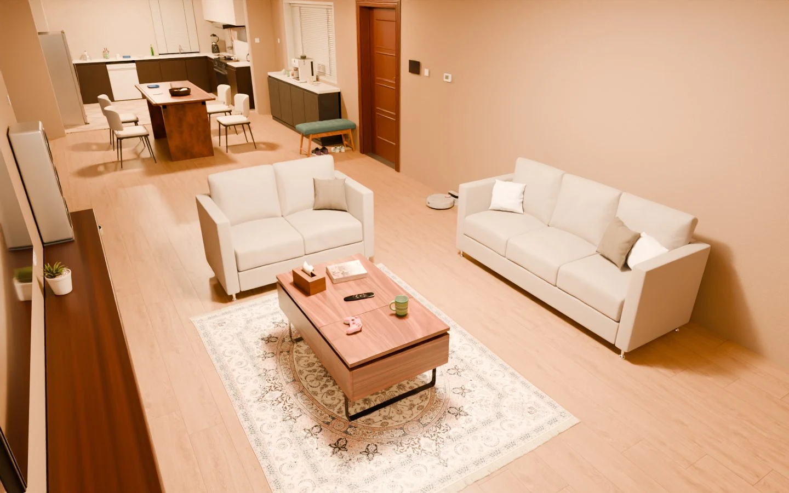
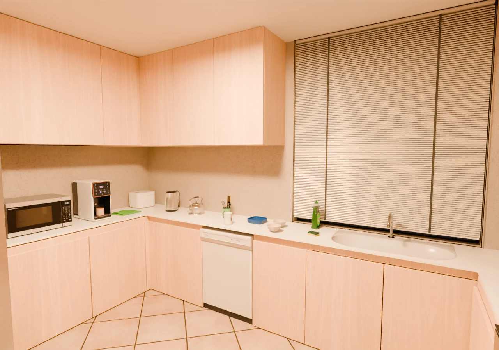
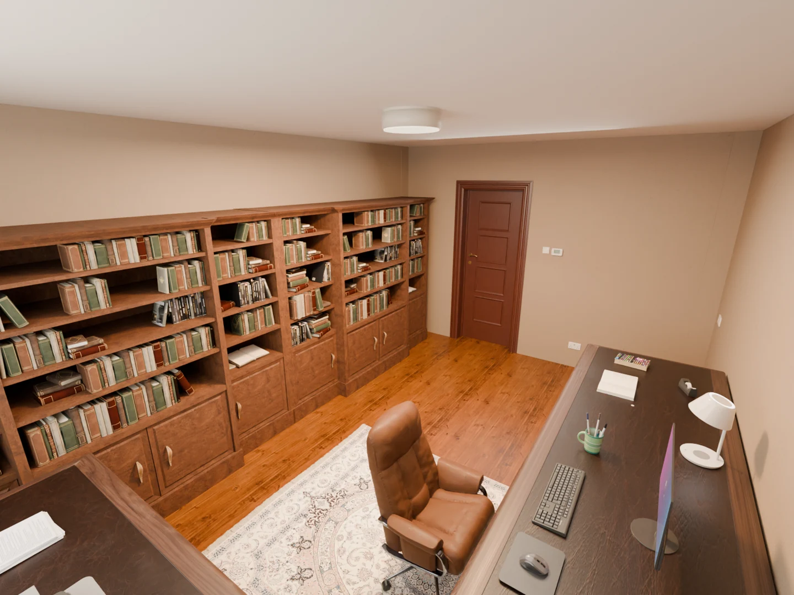
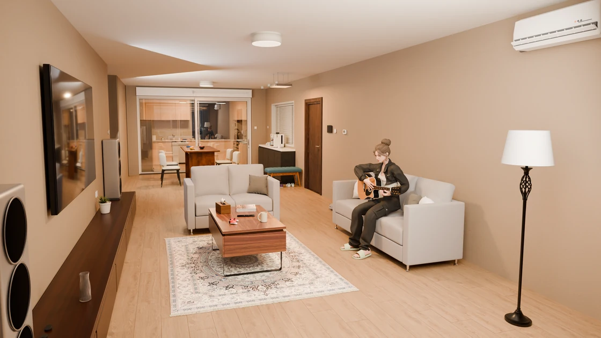
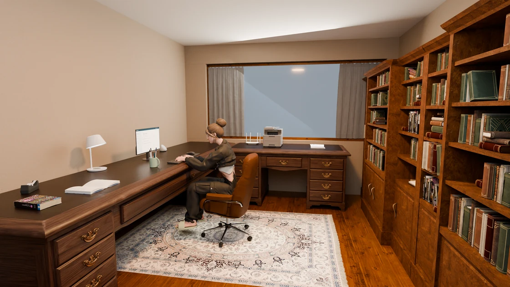
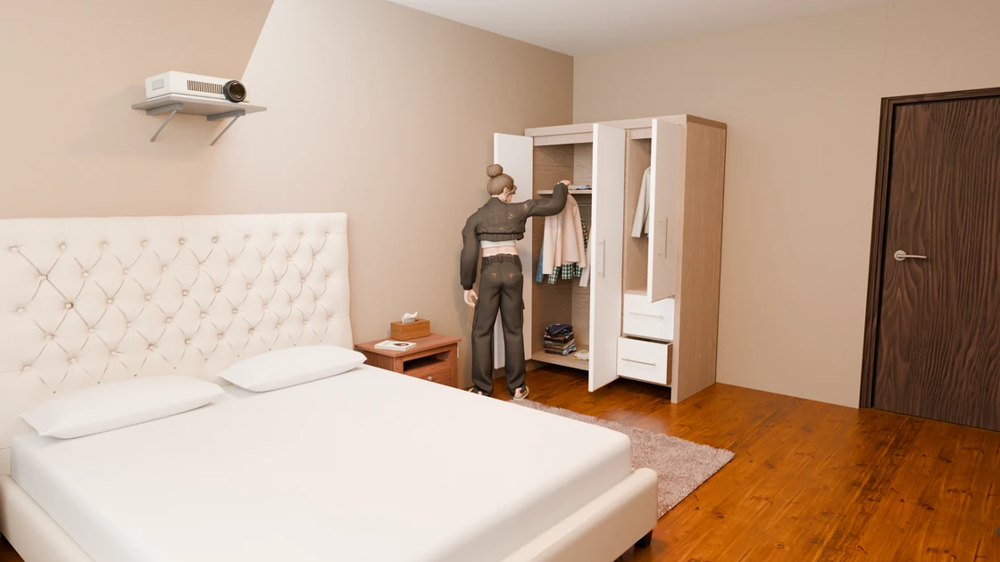
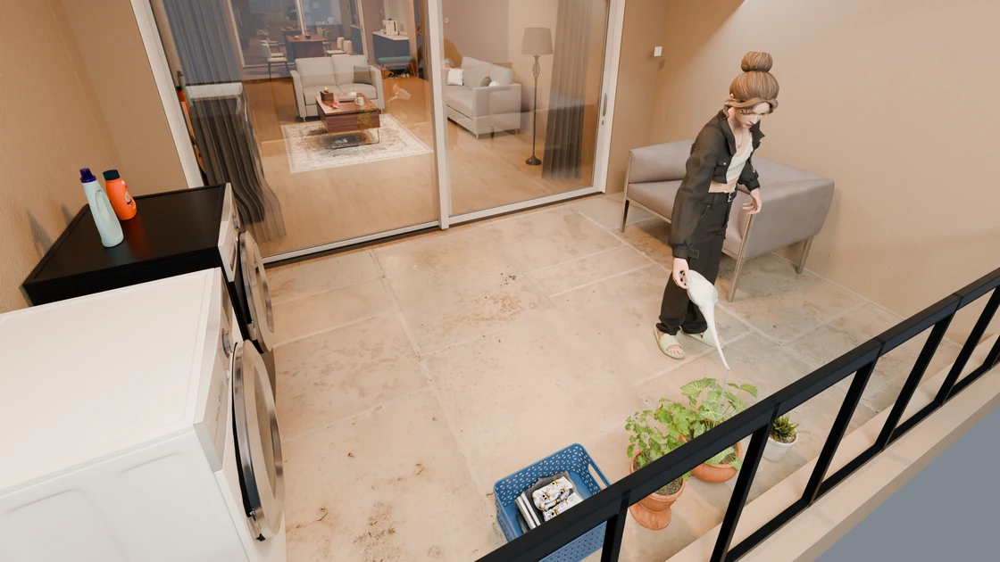
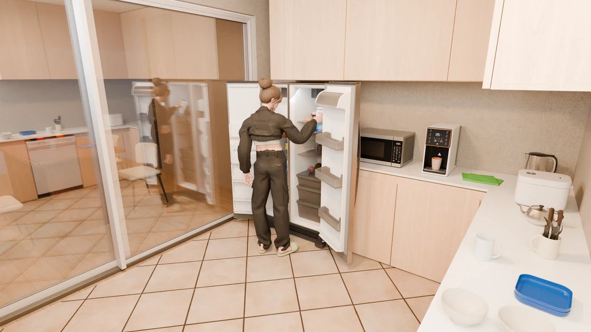
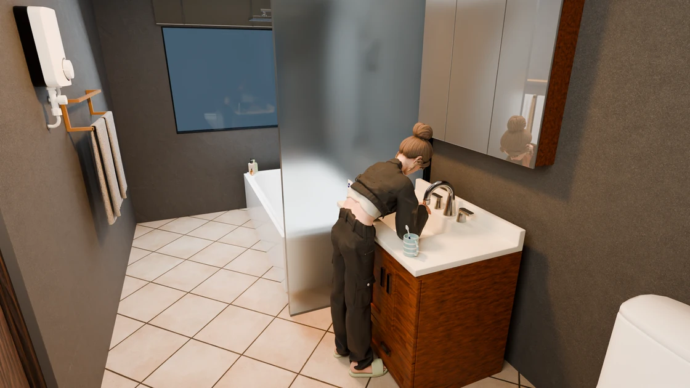

Overview
Making coffee leaves a trace in two places. In the kitchen, a resident sets down a cup. On the device timeline, the coffee machine switches on. X-Family brings these views together so you can follow a routine through the home and see its events unfold in time.
X-Family at a glance
- Days per resident
- 70
- Resident profiles
- 6
- Motion branches
- 241
- House asset groups
- 287
Each profile spans 1,680 hours, for a combined 10,080 participant-hours.
Inside the home



241 motion branches











